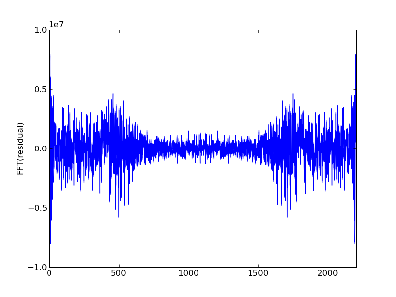
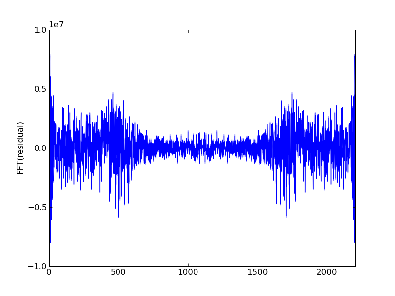

Musical Gauss Seidel.
One second of a 44.1kHz single channel .wav file can be read into an array (call it b) of length 44100. Given a matrix A we seek solutions to the system Ax=b. Through iterations of Gauss-Seidel the vector Ax will approach b with the high frequency parts of Ax getting close to b first. If we take b to be a song recording, some white noise as our initial guess and write out Ax at each iteration we observe that the high pitched notes in b become audible first while at the same time the pitch of the white noise decreases.
 

This is all done in python. Loading .wav files into arrays is not too
bad in scipy. A sparse matrix class is neccessary to avoid memory
problems as a 12 second .wav file needs an array of size 12*44100.
musical_gauss_seidel.py
TridiagonalMatrix.py